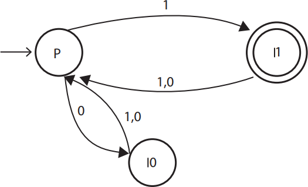

Considere o autômato de estados finitos
determinístico representado na figura a seguir.

O autômato representado reconhece a seguinte
linguagem regular
-
{w
 {0,1}*| |w| é 4}.
{0,1}*| |w| é 4}.
-
{w {0,1}*| |w| é ímpar e termina com 1}.
-
{w {0,1}*| |w| é par e termina com 01}.
-
{w {0,1}*| |w| é ímpar e termina com 0}.
-
{w {0,1}*| |w| é par e termina com 11}.